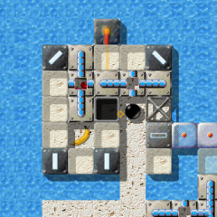
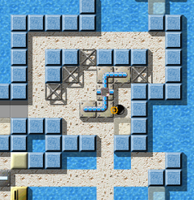
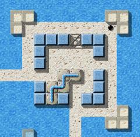
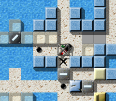

Уровень МесяцаМы хотим каждый месяц больше внимания уделять превосходным уровням. Превосходные уровни это те, у которых средняя оценка пользователей наивысшая и в целом много оценок. Следовательно это Ваш выбор. Поэтому пожалуйста оценивайте уровни, на которых Вы играете и не забывайте присылать Ваши оценки вместе с результатами в конце каждого месяца. Вы можете найти все предыдущие уровни месяца в нашем архиве. Февраль 2008: «Puzzle Puzzles» от Raoul BourquinВ начале наш февральский Уровень Месяца 2008 немного напоминает «Sierpinsky»—катаясь по первым двум экранам, наш любимый мраморный шарик может задуматься о другом испытании на ловкость. Но, когда он доходит до третьего, а потом и четвертого экрана, уровень распахивается как Julia, перед которой мы преклоняемся и впереди нас лежит местность, укрытая головоломками, изогнутыми больше, чем любой фрактал. Добро пожаловать в «Puzzle Puzzles»!

Enigma VI # 55 - Puzzle Puzzles
«Puzzle Puzzles» появляется в нашем списке незабвенных фаворитов под номером шесть, прямо перед своим тезкой «Labyrinth of Puzzles». Наш Уровень Года 2007, «Island Labyrinth» в этом месяце позволил себе непростительную слабость, и хотя он спустился в рейтинге всего на 0.05 баллов—этого оказалось достаточно, чтобы «Quadropolis» вновь заявил о своих правах на место лидера, которое он теперь делит с «Island Labyrinth». В середине списка несколько уровней, тоже опустились в рейтинге, только «Pneumatic Delivery» смог добиться более предпочтительного положения и впервые с июля 2007-го набрал 8 баллов. «Я должен был стать инженером»Вы можете узнать больше о развитии мастерства Raoul'я в проектировании уровней: начиная с относительно неинтересного «Life's Cross», в качестве первого выпущенного уровня, работая в размышлениях и «постоянном поиске», его уровни становились более и более сложными и изящными. Его первые творения были одноэкранными или немного больше, и эта традиция (к этому времени) достигла высшей точки в невероятном «Industrial Puzzles». Я думаю «Space Station» был его первым большим уровнем, а теперь, благодаря «Puzzle Puzzles» он получил свою первую награду Уровень Месяца.
«Puzzle Puzzles» - один из уровней, которые я долгое время не мог решить
и самый сложный из этих головоломок. Уровень, сделанный из морского пейзажа, а не из
комнаты, окруженной стенами выделяется в сравнении с другими уровнями, ставшими
«Уровнем Месяца», и возможно мы просто сможем взглянуть на абсолютно морской пейзаж.
Итак, когда я впервые играл на этом уровне, мне показалось, что в уровне не так много сложностей.
К тому же, я подумал, что могу легко его решить. Но это было не так и я охладил свой пыл. Для меня
было очень трудно его решить.
Сначала я приступил к решению упрощенного режима. Я должен был стать инженером, чтобы построить мост
через море и решить уровень. Но неожиданно, для меня стало сложно выполнить эти задачи из-за
X-образной сетки проводов (st-grate1) и склонов (fl-gradient) по всему острову с камнями-головоломками
и разбитыми бутылками (it-booze-broken). И это не все—уровень преподнес еще больше
преград, например, мне было сложно действовать невидимым шариком, потому что это требует ловкости,
внимания и скорости. Поэтому они очень важны для этого уровня, так же как и интеллект и знания.
Мне нравятся уровни, которые требуют очень высоких значений некоторых способностей.
После того как я решил упрощенный режим, я не смог сразу решить сложный из-за абсолютно другой структуры уровня.
Поэтому мне нужно было больше времени, чтобы стать более совершенным инженером. 'Стать' оказалось самым сложным,
но и самым увлекательным. А X-образная сетка проводов (st-grate1) это важное препятствие, и если бы ее здесь не было,
я решил бы уровень раньше. К тому же, для меня стало проблемой то, что я слишком хорошо понял как решить упрощенный режим, Вы можете себе это представить?
Наконец, я очень сильно восхищаюсь Raoul Bourquin и думаю, что у людей, которые делают такие восхитительные уровни
богатый творческий потенциал, и без них, я бы не провел столько счастливых часов за Enigma и я жду новых
восхитительных уровней в будущем.
Да, будем надеяться! :-) «'Puzzle Puzzles' все еще очаровывает меня»

Первая преграда …
На самом деле, «Puzzle Puzzles» - такая странная смесь сложного и простого,
что я просто сижу тут, потрясенный, и задаю себе вопрос, почему у меня были сложности с
таким простым и легким на вид уровнем. Потом, через несколько дней, когда я вообще ничего
не понял, я спросил себя, как этот уровень набрал «только» 84 очка с общем рейтинге сложности.
Однако, «Puzzle Puzzles» все еще очаровывает меня, не так сильно как «Houdini»,
но я уже пытался больше двенадцати раз понять замысел этих головоломок Raoul'я из «Puzzle Puzzles».
Я думаю, это вызвано оформлением. В этой смеси из fl-water и покрытия напоминающего песок
есть что-то привлекательное и уверенно конкурирующее с уровнем оформления
«Island Labyrinth» и «Temple of Gold». Уровень начинает вселять надежду.
Этот путь, поскольку он серпантином проходит через океан, напоминает мне начало фантастического
приключенческого фильма.
Оправдал ли «Puzzle Puzzles» возложенные надежды? - Я не знаю.
Но тысячи фанатов Enigma не могут ошибаться: добро пожаловать в LotM 2/2008. ;-)
«Puzzle Puzzles» - один из 7 уровней в секретном списке top-60
Ronald'а, которого я еще не знаю. 3 из них - результат лаборатории уровней Ronald'а
и я не могу сдержать ощущение того, что после «Temple of Gold»,
Ronald полностью подчинил себе «Puzzle Puzzles»!?
Однако, в отличие от «Temple of Gold», я думаю, что «Puzzle
Puzzles» это единственный уровень Enigma, в котором упрощенный режим сложнее
сложного! Конечно, я могу ошибаться, потому что я еще не решил ни простой, ни сложный.
*тихий смешок*
Конечно, Harry прав. Вот старания Ronald'а с добавлением последних штрихов, как крема к торту на вершине нашего Уровня Месяца:
23 ноября 2006 года, на следующий день после выпуска бета-версии Enigma 1.00 Raoul
прислал мне первую версию его «Puzzle Puzzles», попросив быстро проверить его на
наличие обходных путей, ведь он надеялся добавить этот уровень в окончательную версию
1.00, которая должна была выйти через две недели.
Для меня было слишком очевидным, что управление могущественной волшебной палочкой было
ключом к этому уровню. Она была нужна пользователям, но не должна была использоваться
всегда и везде. Мы 17 раз пересмотрели уровень руководствуясь как новыми предложениями,
так и исправлением найденных обходных путей, пока наш нижний правый угол не стал удовлетворять
всем требованиям.
Но у исправления было два побочных эффекта. Сначала я высказал идею о добавлении
«острова вишни», на котором в упрощенном режиме, в какой-то мере, присутствовало бы
другое более сложное решение из обычного режима. Да, вы можете считать что я повторяю, то
что говорил о «Temple of Gold». Следуйте совету Ryujun'а о том, что первым стоит
решить упрощенный режим!

… и вторая!
Лучше получить дополнительную жизнь.
А еще я узнал, что в Enigma нет камня, который позволяет автору легко
ограничить проход только для шарика без важного предмета в его инвентаре.
Между тем, мы нашли множество других ситуаций, в которых такой камень пригодился бы,
например уровни с объединенными усилиями могут извлечь выгоду от такого камня.
Поэтому этот уровень может спровоцировать полезное добавление к нашему набору объектов.
И еще один комментарий нашего коллеги, автора УМа:
Когда Вы впервые играете в «Puzzle Puzzles», у Вас наверное нет идей с чего бы начать.
Но как только Вы встретите камни oxyd, Вы узнаете о чем этот уровень:
камень нужно переместить через всю карту. И хотя уже это звучит достаточно сложно, еще больший
вызов ожидает игрока, как только камень попадет в место назначения. Но это как раз те уровни,
в которые мне нравится играть. Вы видите, что нужно сделать, думаете о различных способах решения
и пока еще ни один из них, кажется, никак не работает и в итоге Вы сидите за этим уровнем дольше,
чем планировали сначала.
«Puzzle Puzzles» отличается тщательно проработанным дизайном и фантастическими головоломками
(которые уже видны в названии). По-моему, этот уровень один из многих лучших уровней Enigma, и поэтому
он получает от меня все 10 баллов. Надеюсь в будущем мы увидим больше уровней такого рода!
Да, оформление «Puzzle Puzzles» соответствует Raoul'ю, насколько это возможно: большинство его уровней в какой-то степени связаны с водой, а в этот раз он связал ее с ярко-белым покрытием, со стеклом и светло-голубыми камнями. Открытые, и залитые светом, омраченные только двумя темными местами платформы, напоминают нам о другой его любимой комбинации темных материалов и бездны. «Я специально сделал начало очень сложным»А другой весьма типичный элемент уровней Raoul'я четко просматривается в головоломках «Puzzle Puzzles». Это началось, когда Raoul переписал старый уровень Oxyd и искал какой-либо способ внести элемент случайности в расположение камней-головоломок. Хотя такая функция уже существовала в ant.lua, мы стали обсуждать алгоритмы размещения камней-головоломок и, благодаря этому обстоятельству, стало возможным решить произвольно составленную головоломку. Это случилось в декабре 2005, когда первая пилотная версия «Oxyd-Puzzle» (V/19) вышла в свет. Raoul переписал функции рандомизации и сделал первую версию libpuzzle, которую вскоре заменила libpuzzle 2. Этой библиотекой он вдохнул новую жизнь в использование камней-головоломок, и теперь эта библиотека включена в 15 уровней в пакетах уровней Enigma. Я тоже был воодушевлен libpuzzle и создал с ее помощью «Procrustes», используя ее возможность уменьшить число перестановок, используемых, чтобы побороть головоломку. (Кстати: интересно, что алгоритмы не справлялись с количеством перестановок камней в заданной головоломке, не только из-за того, что это вопрос случая и даже перестановок (как в случае известной головоломки 15("пятнашки")), но еще из-за похожести камней-головоломок друг на друга: создание креста из 5 камней-головоломок не возможно вообще, однако кольцо из 8 камней существует — хотя и та, и другая фигуры используют только перестановки.) Теперь давайте послушаем, что сам Raoul может рассказать об этом уровне, который получил звание второго по сложности уровня из всех с 83 баллами из 100 (у «Aztec Temple» 84 балла):
Я хочу немного рассказать об истории происхождения (с алгоритмической точки зрения)
второго самого сложного уровня в мире Enigma.
Прежде всего, предупреждаю: в этом объяснении есть много подсказок по решению уровня
и его головоломок. Когда я увидел, как мало игроков к этому моменту решило уровень,
я думаю, что нет ничего плохого в том, чтобы разместить здесь несколько дополнительных советов.
Первой частью этого уровня были «Z»- и
«W»-головоломки. Поздним веером я работал, пытаясь воплотить в жизнь свою идею,
которая началась как сплав Сокобана и камней-головоломок.
Стержнем этой идеи был некоторый вид проходов, маленьких, по возможности закрытых, комнат, в которых
большие куски головоломки перекрывали бы путь не шарику, а другому камню. Целью должно было быть перемещение
некоторого камня, например простого деревянного ящика, через проход и размещение его в некотором хорошо
известном месте.

Вишня! Где она может пригодиться?
Я должен это выяснить.
Поэтому я предпринял несколько попыток сделать подобные проходы как можно более сложными. Результатом стали
два прохода, общей размерностью по 8x8 клеток большие части, на которых завязан весь уровень
«Puzzle Puzzles».
Теперь у нас есть несколько преград на пути нашего камня. Еще не определенными остаются завязка и цель.
Чтобы уровень был решен, камень должен откуда-то взяться и быть куда-то передвинут.
Я специально сделал начало очень сложным, даже самым сложным элементом уровня. Поэтому, я тщательно замуровал
«ОВК» (очень важный камень). Игроку предлагается постараться освободить его.
В качестве цели я вскоре придумал, как скрыть несколько камней oxyd в недоступной пещере. Вход был закрыт
на особый замок.
Теперь я искал идею, как оформить этот замок более интересным способом.
Потому, что в первой версии уровня доступ к пещере открывался, как только в замок вставлялся
«ключ».
Я вспомнил особое свойство использования двери, и шаблон,
который я видел в одном из уровней oxyd, но не в Enigma. Вот как в игре, или уровне, появился лазер.
Теперь, кроме того, что я собирался поместить лазер в конец головоломки, может даже в окружении переключателей,
я предусмотрительно включил в уровень луч. После добавления нескольких отверстий для других камней-головоломок,
была добавлена другая загадка и теперь луч старательно связывал весь уровень …
Теперь вся нижняя левая часть остается пустой. Но, так как я решил, что головоломки готовы и не нашел
еще одной стоящей идеи для воплощения, я решил создать простой, почти созерцательный путь,
который не предвещает ничего плохого. Для всех исследователей это последнее мгновение покоя и лучшее
место для тренировок с мышью.
Когда уровень был доделан до этого момента, волнующая часть только началась. Я представил уровень
небольшому кругу отважных искателей приключений. Для некоторых этот уровень был не достаточно
сложным, а до ОВК было просто добраться. Пока Ronald не высказал идею о вишневом острове.
Другая остроумная загадка, которая также требует некоторых навыков повторения действий над объектами.
После пресечения попыток множества маленьких и больших сокращений пути, уровень был готов как раз к
приближавшемуся выпуску Enigma 1.0.
С наилучшими пожеланиями, |